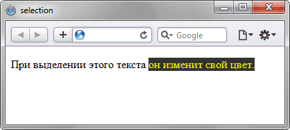

Псевдоэлемент ::selection
Псевдоэлемент ::selection применяет стиль к выделенному пользователем тексту. В правилах стилей допускается использовать следующие свойства: color, background, background-color и text-shadow.
Синтаксис
Селектор::selection { ... }Пример
<!DOCTYPE html>
<html>
<head>
<meta charset="utf-8">
<title>selection</title>
<style>
p::selection {
color: #ff0; /* Цвет текста */
background: #000; /* Цвет фона */
}
</style>
</head>
<body>
<p>При выделении этого текста он изменит свой цвет.</p>
</body>
</html>Результат примера показан на рис. 1. В данном примере при выделении текста он изменяет свой цвет и фон.

Рис. 1. Результат использования псевдоэлемента ::selection
Примечание
Firefox использует нестандартный псевдоэлемент ::-moz-selection.
Спецификация
| Спецификация | Статус |
|---|---|
| CSS Pseudo-Elements Level 4 | Рабочий проект |
Псевдоэлемент ::selection удалён из спецификации CSS3 и добавлен в рабочий проект CSS4.
Браузеры
| Internet Explorer | Chrome | Opera | Safari | Firefox |
| 9 | 1 | 9.5 | 1.1 | 1 |
| Android | Firefox Mobile | Opera Mobile | Safari Mobile |
| 2.1 | 1 | 10 | 1 |